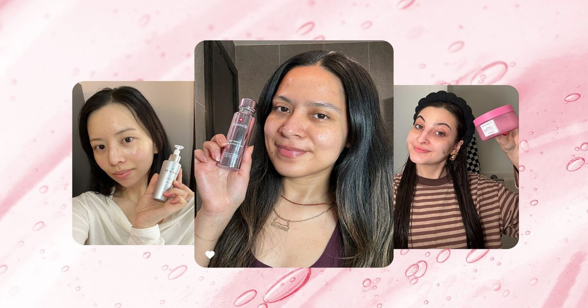

7 лучших сывороток PDRN, которые мы протестировали в 2026 году, по мнению экспертов K-Beauty
Да, стоит добавить один к вашей антивозрастной процедуре по уходу за кожей.
Я скажу вам, почему.

Да, стоит добавить один к вашей антивозрастной процедуре по уходу за кожей.
Я скажу вам, почему.